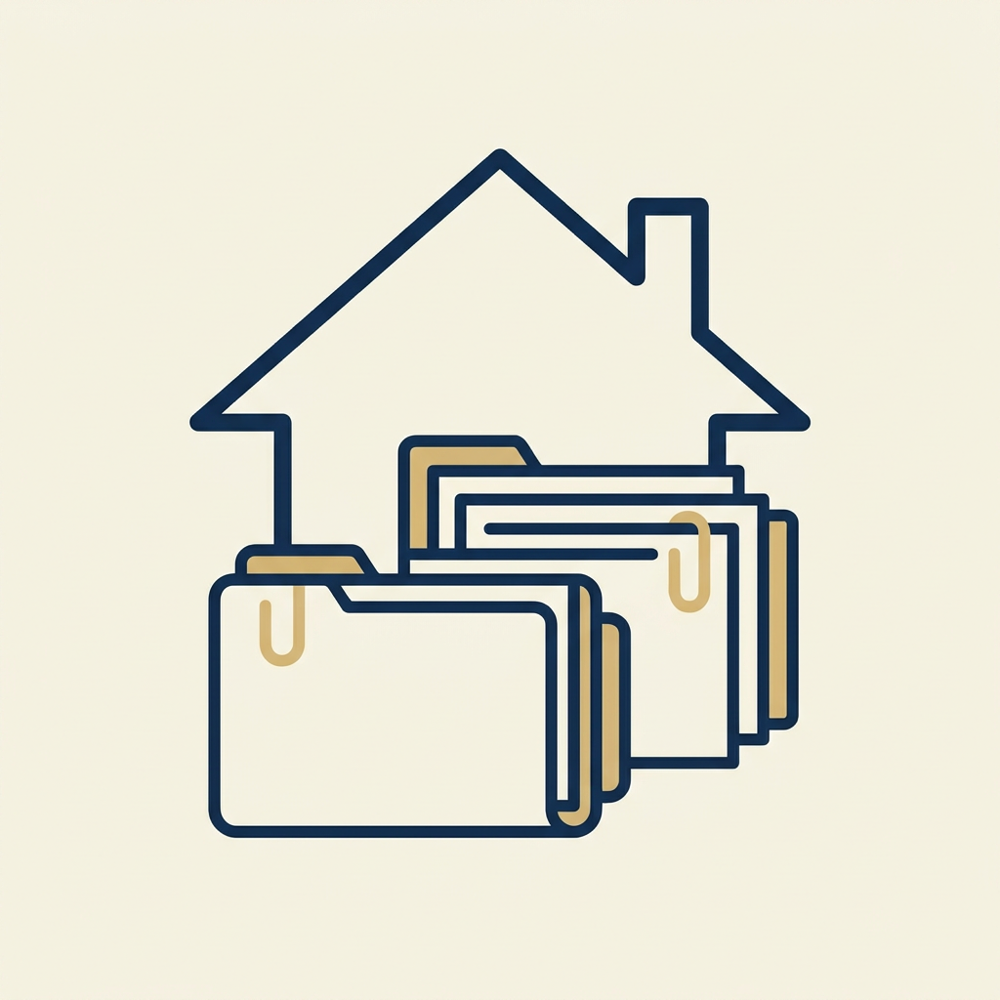
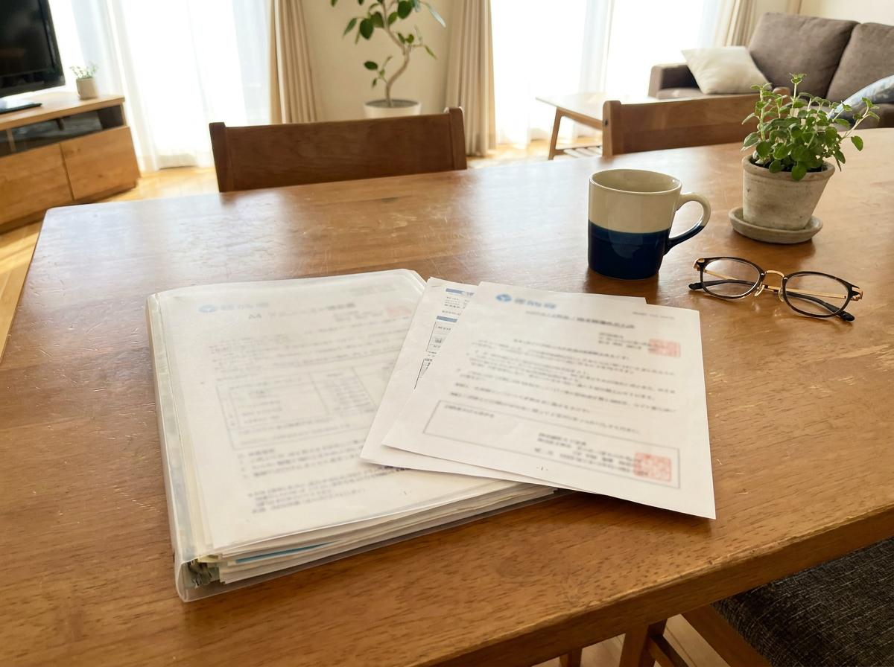

わが家の財産・はじめの整理サポート
相続対策の前に、今の状況を知ることから。
家族に何を伝えればいいか、一緒に確認しませんか。
ご自宅を訪問し、ご本人のお話とお手元の書類を基に、現在分かっている財産や書類、家族に伝えておきたいことを整理します。
財産を評価したり、相続税がかかるかどうかを判断したり、相続対策を提案したりするサービスではありません。作成日時点の状況を整理し、今後確認した方がよいことと、相談先を見えるようにするサービスです。税金の判断が必要なことは、提携する税理士におつなぎします。
これらをA4・2〜3ページ程度の「暮らしと財産の現在地シート」にまとめてお渡しします。
まずはメールでお申し込みください。
相談内容を確認し、合ったメニューをご案内します。
振込またはクレジットカード決済でお支払いいただきます。
面談日の7日前までにご提出をお願いしています。
札幌市内・隣接エリアへお伺いします。
「暮らしと財産の現在地シート」をお渡しします。
結果送付後、簡単なご質問に1回お答えします。
資料提出期限後に提出された資料は、結果に反映できない場合があります。
必要な場合は、提携する税理士や他の専門家をご紹介します（専門家への報酬は、各専門家から事前にご案内します）。本人の希望なく、別の契約を進めることはありません。
どれが必要か分からない場合は、当日一緒に確認します。ただし、限られた時間ですべての書類を詳しく確認することはできません。書類が多い場合は、今回確認するものを一緒に選び、残ったものは今後の確認事項として整理します。

目安：A4ファイル1冊または手提げ袋1つ程度（書類30点程度まで）
これを超える場合や、大量の書類の仕分けから必要な場合は、別途「お金と大切な書類の仕分けサポート」をご案内します（同じ訪問時に追加する場合：60分追加11,000円／90分追加16,500円）。原本は原則として持ち帰らず、必要な書類のみ同意を得てコピーまたは撮影します。
すべて揃っていなくてもご相談いただけます。
ご希望の日程が混み合う場合がございます。お早めのご相談をおすすめしています。